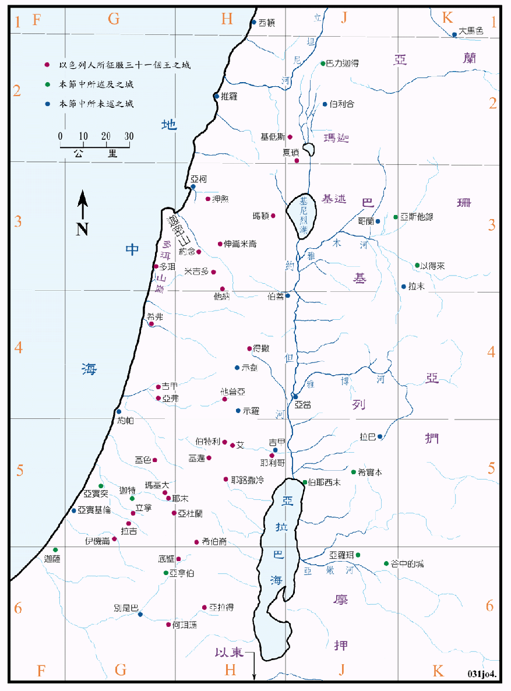

1406～1360BC

| 圣经 | 说明 |
|---|---|
| 书12:1-8 | 以色列人所击杀约但河东的两个王。 |
| 书12:9-24 | 以色列人所击杀约但河西的卅三个王。 |
当时是1406～1360BC，埃及在迦南地的控制力已衰退，故对以色列人的入侵并没有什麽反应，但是迦南人仍然是相当强大的。在约但河以东至少有七个大小不等的王国，就是以东、摩押、亚扪、基述、玛迦和两个亚摩利人的王，他们各有中央政府，统治了很多的城邑和相当大的地区，也能结集强大的兵力对抗以色列人。在约但河西，他们确是采取城邦制，以设防的城堡为主体，城郊外的土地为其领土，虽然没有中央政府，但至少有卅五个以上的城邦，各有其王，城与城间常结盟或互相攻打，所以他们经常备战，战斗力强，军备优良，城防也很坚固，有的甚至可以抵抗数个月的围攻，其中以夏琐城最大有70公顷，米吉多城有5公顷，拉吉有9公顷，基遍有4公顷，耶利哥有3公顷，基色有11公顷亩。